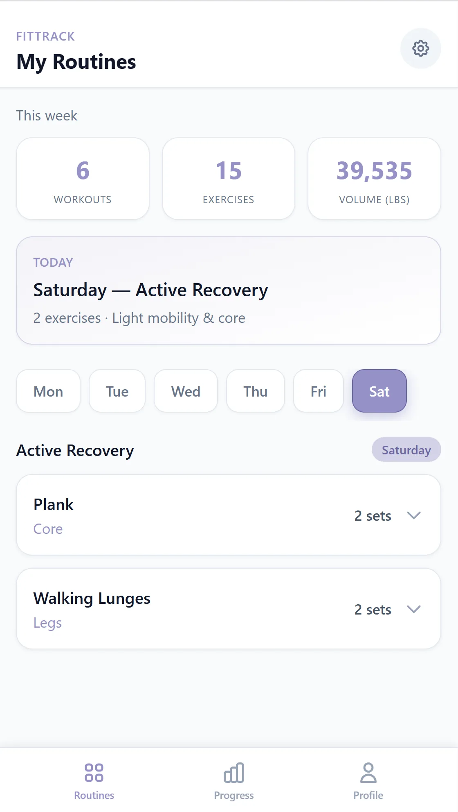

View the work
Four different websites chronicling my development across 8 weeks. Each one gets more and more complex, and explores a different set of aesthetic ideals, functionalities, and integrations.

01 / Mobile App
FitTrack
Card-based workout routines, progress charts, and personal accent theme colors.
View project →

02 / Web App
Botanica Gardens
Living garden archive with palette swatches, plant forms, and collection modals.
View project →

03 / Web App
Encyclopedia Apertif
Dark cocktail archive with spirit search, recipe cards, and glowing discovery states.
View project →

04 / Portfolio Site
S.L. Conrad
Misty landscape-architecture portfolio with tag search, editorial case studies, and GIS mapping.
View project →
- 01 / GridControlled chaos — crowd the canvas, anchor it to a strict grid.
- 02 / TextureGrain, halftone, and static are material — never flat-clean.
- 03 / ContrastComplementary clashes drive hierarchy — cobalt, coral, magenta, lime.
- 04 / TypeTwo voices only — condensed grotesque plus one liquid-serif hero word.